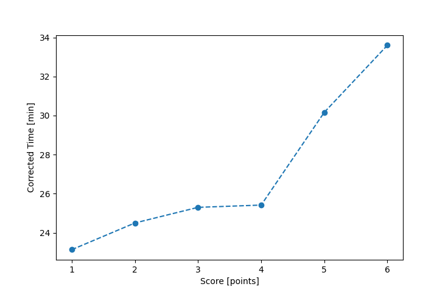

| Wind: | 4 (BFT) |
|---|---|
| RC: | Matt_LRiz_J |
| Date: | August 28, 2022 |
| Notes: | M3 Starboard |
| Rank / Score | Name | Boat | Input Time [mm:ss] | Input Offset [mm:ss] | Race Time [mm:ss] | Race Time [s] | Handicap | Corrected Time [s] | Corrected Time [mm:ss] |
|---|---|---|---|---|---|---|---|---|---|
| 1.0 | Rod_H | LASEM | 34:36 | 00:00 | 34:36 | 2076 | 0.93600 | 2218 | 36:58 |
| 2.0 | Bill_P | SF | 37:33 | 00:00 | 37:33 | 2253 | 0.97800 | 2304 | 38:24 |
| 3.0 | Lewis_V | BCN | 33:22 | 00:00 | 33:22 | 2002 | 0.86300 | 2320 | 38:40 |
| 4.0 | David_Bu | SF | 38:21 | 00:00 | 38:21 | 2301 | 0.97800 | 2353 | 39:13 |
| 5.0 | Ian_O | SF | 38:45 | 00:00 | 38:45 | 2325 | 0.97800 | 2377 | 39:37 |
| 6.0 | Chris_E | SF | 39:01 | 00:00 | 39:01 | 2341 | 0.97800 | 2394 | 39:54 |
| 7.0 | Matt_T | SF | 40:02 | 00:00 | 40:02 | 2402 | 0.97800 | 2456 | 40:56 |
| 8.0 | Jim_S | SF | 44:25 | 00:00 | 44:25 | 2665 | 0.97800 | 2725 | 45:25 |
| 9.0 | Ryan_C | SF | 47:44 | 00:00 | 47:44 | 2864 | 0.97800 | 2928 | 48:48 |

Application Notes:
All race results are unofficial
View source code at https://github.com/cessnao3/portsmouthracecalc/